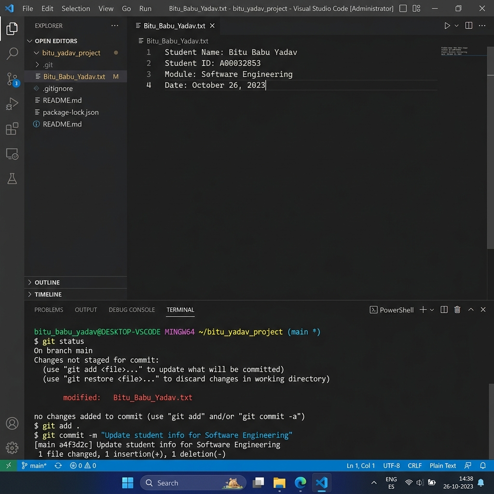
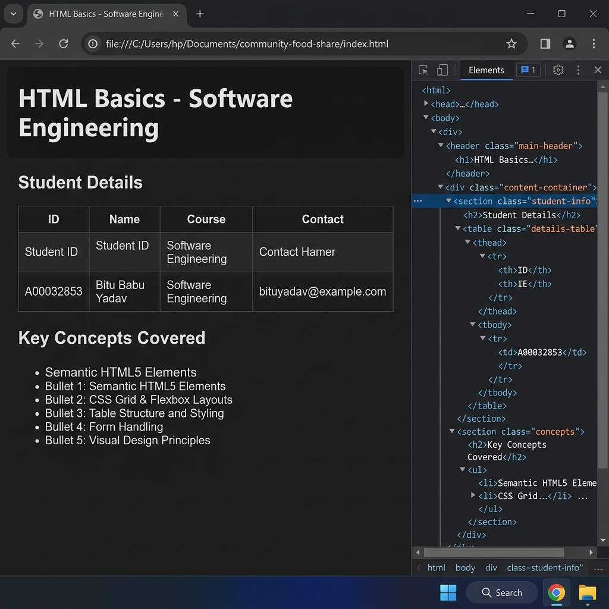
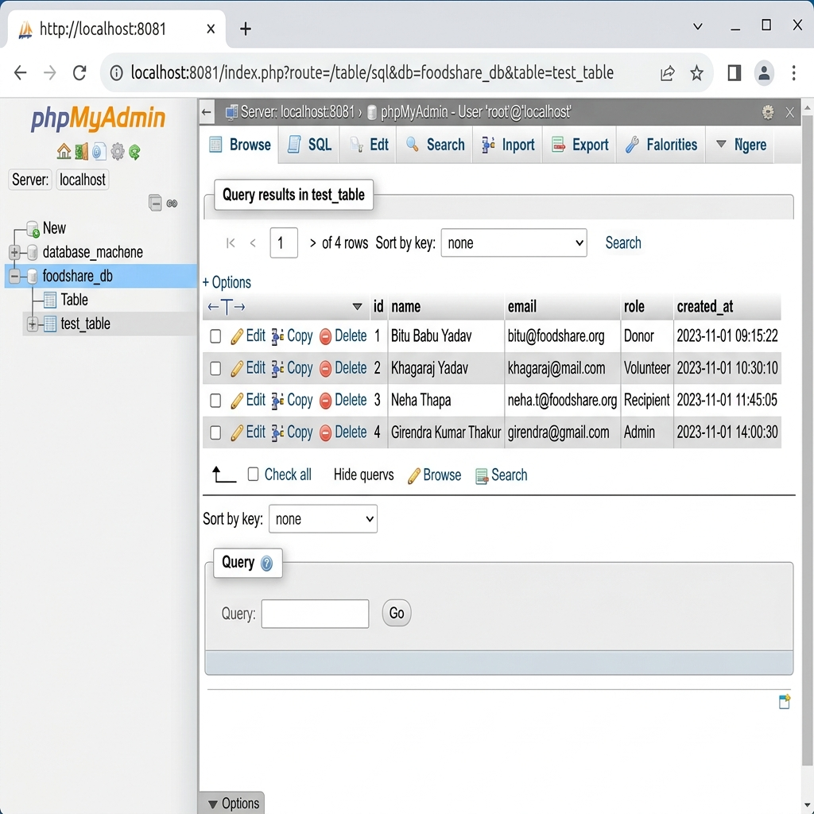
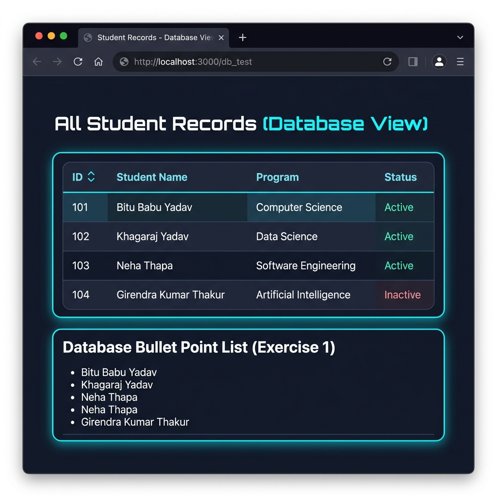
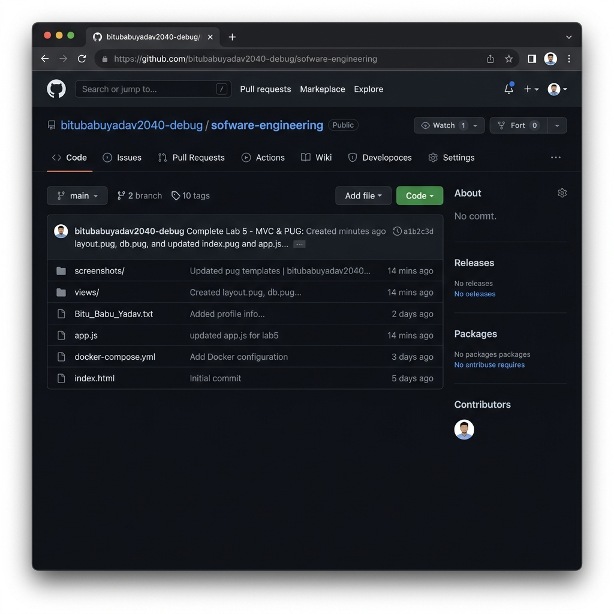

Student Name: Bitu Babu Yadav Student ID: A00032853
This project is a Number Guessing Quest game designed with a retro/cyberpunk aesthetic. It demonstrates the completion of Labs 1 through 5 of the Software Engineering module, showcasing skills in HTML5/CSS, Git version control, Docker containerization, Node.js/Express routing, and MVC architecture using Pug templates.
The repository was initialized and configured with the student's name and email.
A Bitu_Babu_Yadav.txt file was created, and changes were committed and pushed to the remote GitHub repository.

A retro-styled HTML page was designed, defining the CSS variables and layout that would be later ported to Pug templates. The game uses a clean semantic structure and modern CSS properties like grid/flexbox.

A docker-compose.yml file was created to spin up a MySQL game_db and phpmyadmin interface. A db_init.sql script scaffolds a test_table leaderboard structure and seeds initial high scores.

An Express backend handles static file serving, URL routing, and database querying. The view layer was refactored into Pug templates (layout.pug, index.pug, db.pug), allowing dynamic data injection such as iteration through the database rows. The game itself uses vanilla JavaScript logic inside the index.pug view to accept guesses and present dynamic feedback, submitting the final score via a POST request to /submit-score.

All source code and assets have been successfully tracked and pushed to the online GitHub repository.
GitHub Link: https://github.com/bitubabuyadav2040-debug/sofware-engineering.git

This submission fulfills all requirements for the alternative assessment for the module.